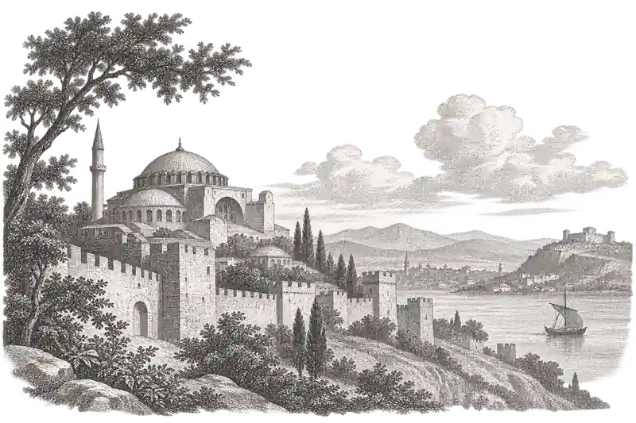

ARCHIVO PERSONAL
Un atlas privado.
Para consultar las fichas, iniciá sesión con tu cuenta de Palabra Viva.
Para consultar las fichas, iniciá sesión con tu cuenta de Palabra Viva.
Imperios que se extinguen, repúblicas que sobreviven entre gigantes, reinos de frontera, ciudades santas y proyectos políticos improbables.
Un atlas de formas de soberanía, memoria, liturgia, ruina e imaginación histórica. Ochenta mundos políticos para leer, comparar y seguir explorando.
Explorar las entidades ↓
Explorá por tradición política, período y afinidad. Las fichas conservan la selección personal del Excel.
No se encontraron entidades con esos criterios.
El listado no pretende jerarquizar los estados por poder o extensión. Reúne instituciones, relatos y lugares que tienen una densidad simbólica particular: la burocracia de un imperio, la persistencia de una ciudad, las aspiraciones de una comunidad.
Los libros, los textos y las obras audiovisuales proceden del canon original. Sus vínculos externos son búsquedas de consulta, no enlaces de compra ni garantías de disponibilidad. Las fechas pueden ser aproximadas.